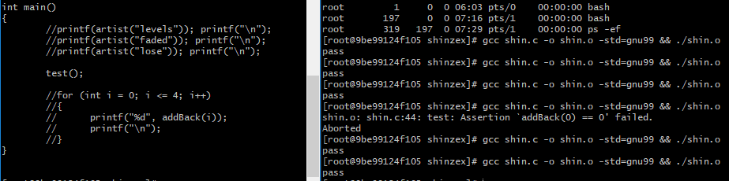
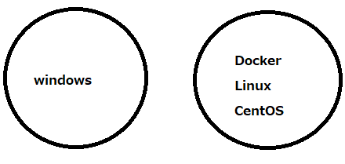

ZENIT ARCHIVE
Zen Programming - Private Class
Sep 2, 2018
今日は鍋山真一郎君と禅プログラミング授業をやりました。彼は１５歳だけど、ある程度英語ができて、前も開発の経験があって、かなり複雑な開発できました。
Today, I gave a Zen programming private lesson to Shinichiro Nabeyama, a 15-year-old Japanese high school student who knows a little bit of English and had some prior experience with programming.
方語の英語と日本語で喋って、Windows上にDockerを使って、CentOSのContainerを立ち上げて、gccで僕たちがviで書いたCコードをCompileして実行しました。
While communicating with simple English and Japanese, we used Docker on Windows to spin up CentOS containers, upon which we used vi to write C code that we compiled and ran with gcc.
しん君はCの言語にそんな経験がなかったから、多くの時間はC言語の構文を説明するために使っちゃったから、コード自体はそんな複雑ではなかったけど、少しTDDができました。
Shinichiro didn’t have much experience with C, so a lot of our time was spent on explaining the fundamentals of C, but the actual code was not so complicated and we could do some TDD.
#include "assert.h"
#include "stdio.h"
#include "string.h"
char* artist(char* song)
{
if (0 == strcmp(song, "levels"))
return "avicii";
else if (0 == strcmp(song, "faded"))
return "alan walker";
else if (0 == strcmp(song,"lose"))
return "shinzex";
return "unknown";
}
int addBack_old(int x)
{
if (x == 0)
return 0;
if (x == 1)
return 1;
if (x == 2)
return 1 + 2;
if (x == 3)
return 1 + 2 + 3;
if (x == 4)
return 1 + 2 + 3 + 4;
return -1;
}
//recursive
int addBack(int x)
{
if (x == 0)
return 0;
return x + addBack(x-1);
}
void test()
{
assert(addBack(0) == 0);
assert(addBack(1) == 1);
assert(addBack(2) == 3);
assert(addBack(3) == 6);
assert(addBack(4) == 10);
printf("pass\n");
}
int main()
{
//printf(artist("levels")); printf("\n");
//printf(artist("faded")); printf("\n");
//printf(artist("lose")); printf("\n");
test();
//for (int i = 0; i <= 4; i++)
//{
// printf("%d", addBack(i));
// printf("\n");
//}
}
Recursive functionの作り方も教えました。
I also taught a bit about recursive functions.
もちろん、禅プログラミングのワークショップだったから、坐禅もやりました。自分が１３年前からやってるヨガも少し一緒にできました。
Of course, being a Zen programming workshop, we did Zazen. Also, I showed Shinichiro some of the Yoga I had been practicing for 13 years.
Extreme Programmingというなシリコンバレースタイルのペアプログラミングもやってて、２つのモニター、２つのキーボード、２つのマウスでした。あいにく、しん君のキーボードは日本語版だったからかなり苦労しました。
Using the “Silicon Valley style” Extreme programming, we used 2 monitors, 2 keyboards, 2 mice. Unfortunately, Shinichiro’s keyboard was Japanese so we had some difficulties there!
傘松閣の電気の付け方にも間違ってかなり時間使っちゃいました。扇風機もなくて、暑くてしん君が苦労してました。
We also had some trouble turning on the lights in the Zazen room, as well as no fan, so Shinichiro was bearing the heat!
短い３時間でしたが、いろんなことができて、成功のもとである失敗もできて、いい体験でした！
It was a short 3 hours, but we were able to do many things, and make some mistakes to help make next time even better!
Recent Posts
See All
2019/12/15 ZenIT Workshop @ Tenryuuji - Blog Post
2019/04/14 ZenIT Workshop @ Eiheiji - Blog Post
University of Fukui Students Learn About the Silicon Valley and ZenIT

